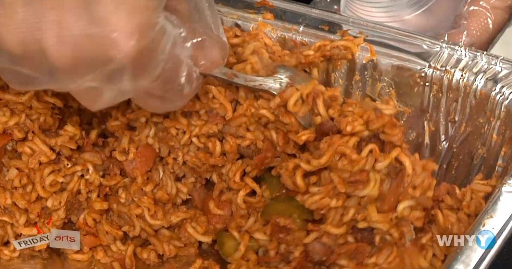

ChiChi (Courtesy of the PA Department of Corrections)

Ingredients:
- Ramen Noodles
- Summer Sausage
- Jalapeño Cheese Spread
- Pickle
- Doritos
- Cheetos
- Mayo
- water
Equipment:
- Stinger or Microwave
- Empty Family Size Chip Bag
- Can lid or DOC ID Card
Directions:
- Crush the ramen noodles, doritos, and cheetos until they are in small chunks
- Dice the summer sausage and pickle
- Heat the water until just before boiling using the stinger or with a microwave
- Pour the noodles and chips into the empty chip bag. Then slowly add the water.
- Wrap the end of the bag, making sure to push out all of the air
- Let sit for 5 minutes, then add the summer sausage and pickle and mix.
- Cut the bag open and top with the mayo and the Jalapeño cheese